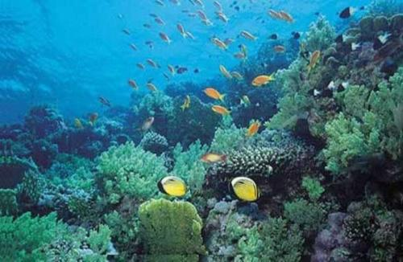

发布者 青岛旅行 2016-10-08 15:43:29
“面朝大海，春暖花开”这场景是我魂牵梦绕的地方。青岛是北方最佳的观海城市，炎炎夏日，生活在内陆的我希望得到海风的抚摸，海水的浸润，这种渴望驱使着我前往美丽的岛城——青岛。 从未看过海的我不禁会想占地球表面积71%的海洋只是广阔无垠的吗？里面有哪些未知生物呢？它只是空洞而深邃吗？生命起源于海洋吗？当浪花拍击着我的脚丫时，我开始觉得大海是涌动着的生命，静下心来甚至可以感受到生命在律动。海洋里的生物在各自的轨道上生活着，看似亘古不变，一切都瞬息万变。 梦幻水母宫 浪漫的人最适合来梦幻水母宫了。亚克力玻璃缸中展览着各种各样的水母。尤其是那些发着蓝光的栉水母，像一把把蓝色的小伞，在触手的摆动下前行，游动着的色彩格外美丽。仔细看她们在跳舞，看她优雅的身姿，修长的双腿，纤细的臂膀，在轻盈的舞动着。若给她们配上音乐，这会是一场唯美、浪漫的音乐剧。 海兽馆
青岛海底世界位于青岛莱阳路2号，毗邻青岛著名风景区鲁迅公园和第一海水浴场，总建筑面积7000平方米，水体4000吨，是由青岛水族馆和山东鲁信投资集团有限公司共同 投资开发的现代大型海洋生态旅游项目，总投资达2.2亿元。